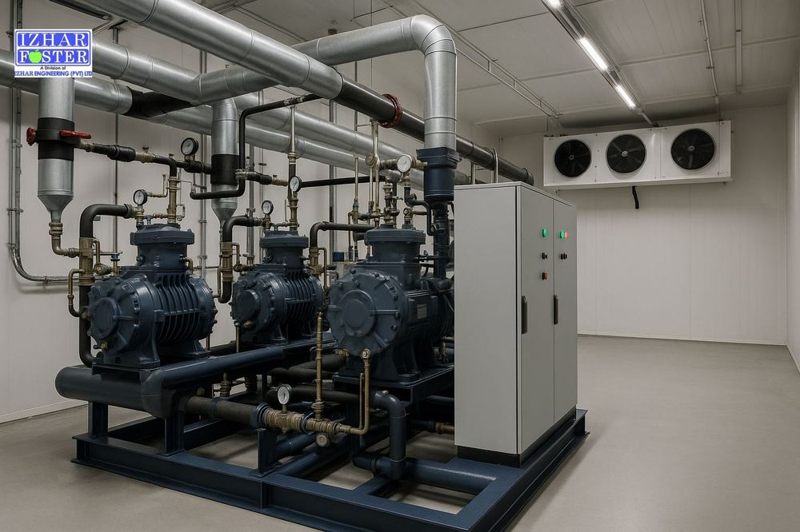
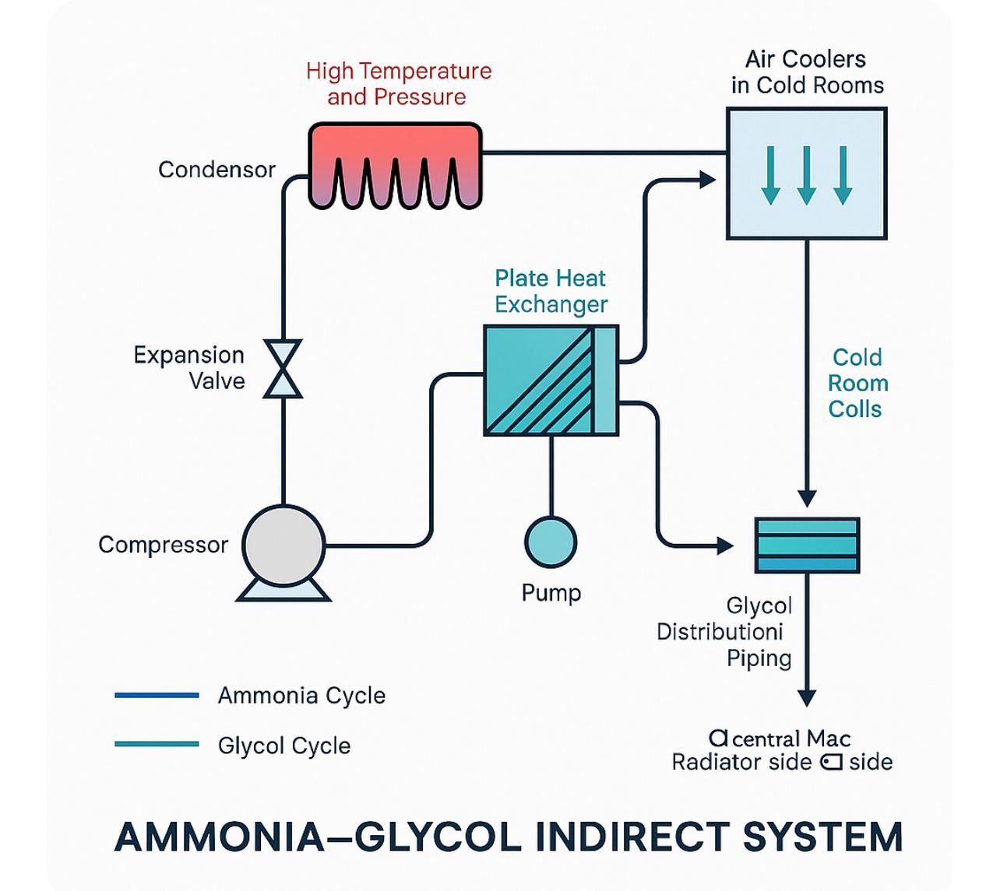
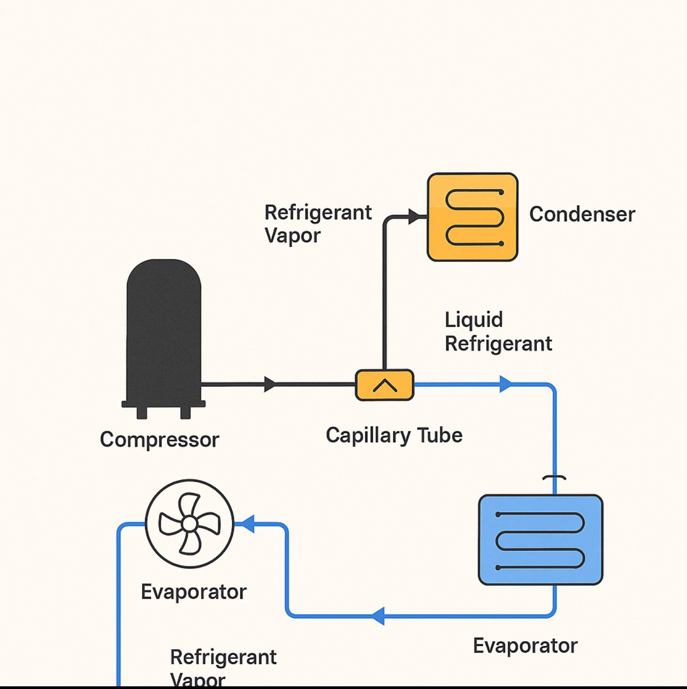

Refrigeration plants engineered for Pakistan's grid, climate, and uptime.
Industrial refrigeration plants in Pakistan since 1959 — ammonia (NH₃) DX, ammonia–glycol indirect, and Freon CDU systems engineered for 50°C summer ambient and grid realities. We integrate Bitzer compressors, Heatcraft rack systems, LU-VE evaporators, and Zanotti packages with our own engineering, installation, and 24/7 service across Pakistan. Designed, supplied, installed, and maintained by Izhar Foster.

Refrigeration is the engine room of any cold-chain facility. The right plant runs reliably for decades on Pakistan's grid, recovers gracefully from disturbances, and delivers exactly the temperature your product needs at the lowest viable energy cost. The wrong plant becomes a permanent operating headache.
Refrigerants we work with
Ammonia (NH₃) systems
The thermodynamic gold standard for large industrial loads — meat processors, distribution hubs, ice plants, large freezer warehouses. Excellent efficiency, zero ozone depletion potential (ODP), zero global warming potential (GWP), and lower lifecycle cost at scale, with the engineering rigour ammonia demands.
Why ammonia for large facilities:
- High efficiency — outstanding thermodynamic properties make ammonia one of the most energy-efficient refrigerants for large cold storage
- Environmentally friendly — zero ODP, zero GWP, no F-gas regulatory burden
- Cost-effective at scale — higher initial cost is offset by lower long-term operating cost for warehouses, food plants, and industrial applications
- Long-term reliability — properly maintained, ammonia plants deliver decades of dependable service
Freon (HFC/HCFC) systems
Simpler operation and lower regulatory burden for medium-scale commercial, retail, pharma, and food-service applications. Right-sized HFC systems are robust, mature, and well-supported, with widely available spare parts and technician expertise across Pakistan.
Refrigerants we use: R134a (medium-temp cold rooms / chillers) · R404A and R507 (low-temp freezers) · R407C (chillers and cold storage) · R410A (high-pressure modern systems). R22 is supported on legacy plants but actively phased out per Montreal Protocol.
Ammonia system architectures
Three distinct ammonia configurations — we specify the right one for your load, layout, and safety profile.
1. Ammonia Direct Expansion (DX)
Liquid ammonia is metered directly into evaporator coils inside the cold room, where it boils and absorbs heat. Compact and straightforward — best where the cold rooms can accept ammonia in the evaporators (typical for industrial freezer warehouses without occupancy concerns).
Components: Compressor · Condenser · Expansion valve · Evaporator coils. Best for: Single-temperature freezer warehouses, ice plants, large distribution hubs.
2. Ammonia Pumped Circulation
A recirculation pump circulates liquid ammonia through evaporators at high flow rates. Only a portion evaporates (wet return); the remainder flows back to a low-pressure receiver for separation. Vapor returns to compressor; liquid is pumped back to evaporators.
Components: Compressor · Condenser · Low-pressure receiver (separator) · Recirculation pump · Evaporator coils. Advantages: Uniform cooling across very large spaces, efficient heat transfer in big-volume cold stores. Best for: Blast freezers, food processing plants, large distribution warehouses.

3. Ammonia–Glycol Indirect
Ammonia never enters cold rooms. Instead, it cools a secondary fluid (typically glycol) in a plate heat exchanger inside the central machine room. Chilled glycol is pumped to air coolers in the storage areas, absorbing heat from the rooms. The ammonia cycle stays confined to the machine room — minimising leak risk to occupied spaces.
Components: Compressor · Condenser · Plate heat exchanger · Glycol pumps · Glycol distribution lines · Air coolers (glycol side) inside cold rooms. Advantages: Enhanced safety (ammonia isolated from product zones), flexibility for multi-temperature zones, ideal where personnel and product safety are critical. Best for: Pharma, dairy, multi-zone facilities, sites with occupancy in adjacent areas.
Freon capacity ranges
We design and install Freon-based systems from 0.25 HP to 25 HP — covering everything from a single display cabinet to a multi-room industrial cold store.
- Small (¼–3 HP) — mini cold rooms, display cabinets, restaurant freezers, medical storage, floral shops
- Medium (3–10 HP) — small supermarkets, dairy storage, mid-sized cold rooms for fruits, vegetables, beverages
- Large (10–25 HP) — large cold stores, industrial freezers, multi-room storage, distribution centres
Single-unit or parallel rack configurations available depending on load profile and redundancy requirements.

Equipment categories
- Chillers — continuous process cooling for food, pharma, and plastics
- Blast freezers — rapid temperature reduction for meat, seafood, and bakery
- Plate freezers — uniform freezing of flat-packed fish and poultry
- Modular cold rooms — packaged refrigeration matched to envelopes
- Multi-temperature warehouses — coordinated multi-zone systems
- Pre-cooled distribution centres — engineered for fast loading
Designed for Pakistan
Every plant we deliver is sized for high-ambient operation (50°C condenser conditions where needed), specified for the actual voltage swings on your grid feed, and configured for your generator backup arrangement. Coastal projects use materials and condenser configurations resistant to salt-laden air.
Beyond hardware
We integrate temperature-controlled logistics planning, remote monitoring systems, hygiene-compliance engineering, and energy-efficient design across every project.
Where refrigeration systems are used.
Each application has different temperature, hygiene, and compliance demands. We've delivered for all of them.
Cold storage
From single rooms to multi-zone distribution
Food processing
Continuous chilling and freezing in production lines
Pharmaceutical
Validated cold rooms and process cooling
Beverage
Process cooling and finished-goods storage
Seafood
Plate freezers and frozen storage installations
Logistics
Pre-cooling docks and multi-temperature warehouses
Refrigeration Systems — questions buyers ask.
The technical and commercial questions we hear most often before a contract is signed.
01Ammonia or Freon — which is right for me?
02What's the difference between ammonia DX, pumped circulation, and ammonia–glycol systems?
03What capacity range do your Freon systems cover?
04Which Freon refrigerants do you use?
05Do you offer remote monitoring?
06Can you service plants you didn't install?
07How redundant should my plant be?
Want a rough cost estimate? Sales-engineer tool, ±20% band.
Sales-engineer tool that combines sizing with cost output. Editable Izhar margin line. Pakistan-tuned across 12 cities and 24 commodities. Refrigeration plant capex per HP across CDU, rack, NH₃-glycol, and NH₃-DX architectures.
Open the rough estimator →